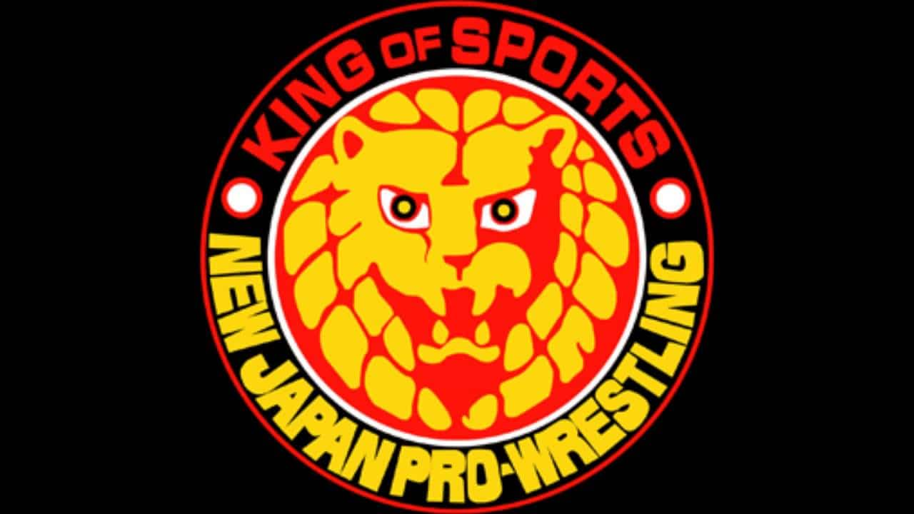

lucha libre
HISTORIA
La lucha libre profesional (Pro Wrestling en inglés o Pressing catch en España) es un deporte en forma de performance que combina disciplinas de combate y artes escénicas, basándose en ellas para representar combates cuerpo a cuerpo, por lo general con historias y rivalidades que enfrentan a los heel (o rudos) y a los face (o técnicos), siendo los primeros quienes representan al villano/a, y los segundos al héroe/heroína. Quienes escriben las rivalidades y planean los combates son denominados bookers, y a pesar de ser los que desarrollan prácticamente todo el show, la coreografía de combate no es hecha por ellos, sino por los mismos luchadores. Sus orígenes datan de los carnavales y music halls del siglo XIX, en los que tenían lugar demostraciones de forma física y fuerza. La lucha libre profesional moderna usualmente posee rasgos de agarre y acrobacias aéreas, así como varios estilos de artes marciales. Durante la mayor parte del siglo, los promotores y participantes de la lucha libre argumentaban que la competición era completamente real. Cualquier pretensión de competición fue abandonada al final de la década de 1990, cuando la World Wrestling Federation de Vince McMahon comenzó a describir sus eventos como solo "entretenimiento deportivo", junto a un cambio formal de nombre hacia World Wrestling Entertainment. La lucha libre profesional es especialmente famosa en Japón, Estados Unidos y México.Desde su florecimiento en estos países, la lucha libre ha evolucionado de forma diferente en cada uno de ellos, creándose disciplinas análogas, llamadas puroresu en Japón y lucha libre mexicana en México. Las figuras de alto nivel de la lucha libre profesional se convierten en celebridades o iconos populares. Aunque la lucha libre comenzó con pequeños actos en circos y ferias ambulantes, hoy en día es una industria que mueve millones de dólares. Los ingresos provienen de la venta de entradas, emisiones de televisión, merchandising (artículos de promoción comercial), etc. Recientemente, también se está empleando la difusión por Internet y otros métodos. Además, la lucha libre fue pionera en hacer de los pago por visión una fuente viable de distribución de contenidos. Eventos como WrestleMania, Double or Nothing, Wrestle Kingdom, ROH Final Battle, Bound for Glory, Royal Rumble, Triplemanía, Guerra de Titanes y Aniversario del CMLL son los mayores PPV de cada año.
NJPW
NJPW siempre ha procurado la presencia de extranjeros en sus funciones, quienes tradicionalmente son los «villanos» frente a los heroes nativos, por ello ha tenido acuerdos de trabajo con empresas de lucha libre y artes marciales mixtas en todo el mundo, incluyendo WWE, AEW, World Championship Wrestling (WCW), Total Nonstop Action Wrestling (TNA), Full Impact Pro, Ring of Honor (ROH), PRIDE Fighting Championships y el Consejo Mundial de Lucha Libre (CMLL). New Japan Pro-Wrestling (NJPW) es una empresa de lucha libre profesional fundada por Antonio Inoki en 1972, se trata de la más grande y longeva promoción de lucha profesional en Japón, y la segunda a nivel mundial, detrás de WWE.
AEW
Tanto la gestación como el crecimiento de AEW son algo único en la historia. El génesis de AEW se remonta a mayo de 2017, cuando un fan le preguntó a Dave Meltzer a través de Twitter si era posible que Ring of Honor pudiera llenar una arena con diez mil personas. Meltzer dijo que no era posible. A eso Cody Rhodes respondió «Reto aceptado». Para noviembre de ese año, Cody, aliado a los Young Bucks, ya estaban buscando una arena para hacer un evento con estrellas independientes. La función fue denominada All In, y cuando salieron a la venta los boletos, se agotaron en una hora. All In se efectuó el 1° de septiembre de 2018 en el Sears Centre de Chicago, logrando una entrada de 11,263 aficionados. Sus cifras lo convirtieron en el más exitoso evento independiente en la historia de la lucha de Estados Unidos.
AAA y CMLL
De acuerdo con la investigación realizada por el MODO, los primeros encuentros de lucha libre en México ocurrieron a principios del siglo XIX. Estas primeras exhibiciones incluían funciones de lucha grecorromana, las cuales fueron llevadas a cabo por tropas francesas durante la Intervención (1860-1867). Otro antecedente se encuentra en el jiu-jitsu japonés y en el wrestiling estadounidense, espectáculos que se presentaban en carpas callejeras, plazas de toros y salones, tal como ocurría con presentaciones de circo, teatro de revista o el box. a lucha libre mexicana se deriva del catch-as-catch-can francés —que fue popular durante la década de 1930— en combinación con el wrestling estadounidense y la lucha grecorromana. El 21 de septiembre de 1933 se fundó la empresa más importante de lucha libre en el mundo, la Empresa Mexicana de Lucha Libre. Y ahí comenzó a escribirse la historia de la lucha libre mexicana. De acuerdo con Víctor Manuel López, la lucha libre mexicana prosperó y se volvió única cuando su iconografía, tan colorida como kitsch, empezó a proveer a sus seguidores de una gran teatralidad catártica mediante sus dimensiones simbólicas.
WWE
WWE es la empresa de lucha libre profesional más grande del mundo. Produce la mayor cantidad de horas semanales de televisión, que se concentran en los programas Monday Night Raw , Friday Night Smackdown, NXT y 205 Live, además de emisiones originales para WWE Network. La compañía que ahora es WWE fue fundada como Capitol Wrestling Corporation a finales de 1952 por Vince J. McMahon, hijo del promotor de boxeo y lucha Jess McMahon, quien se había retirado años antes. En internet suele circular la versión de que Capitol fue fundada por Jess McMahon y Joseph Raymond «Toots» Mondt, pero eso no es verdad.